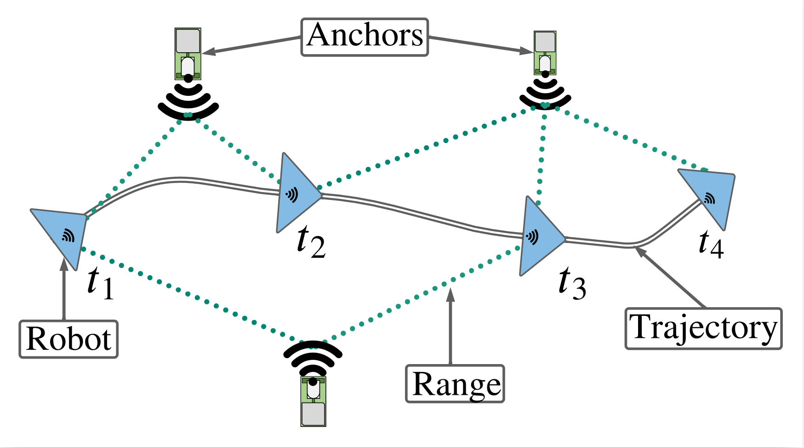

Range-aided localization
In range-based localization, a robot equipped with one or more distance sensors, referred to as a tag, determines it position by measuring the distance to other sensors in the environment, referred to as anchors, as shown below.

If the position of the anchors is unknown, then the process of determining the robot trajectory and the anchor positions is generally referred to range-only (RO) simultaneous localization and mapping (SLAM).
The distance measurements from a single tag are insufficient to determine the full pose (position and orientation) of the robot. Typically, range senors are combined with other sensing modalities such as inertial measurements (IMUs), wheel encoders and cameras to estimate the full pose, which is referred to as range-aided localization.
Range measurement model
The UWB range measurement at any time \(t\) between the robot and an anchor \(a\) is given by
\[\begin{equation} r_{au}(t) = \| \mathbf{p}_{a} - \mathbf{R}(t) \mathbf{p}_u - \mathbf{p}(t) \|_2 + \eta_{r}(t), \label{eqn:uwb_model} \end{equation}\]where \(\|\cdot\|_2\) is the \(\ell^2\) norm, \(\mathbf{T}(t) = \{\mathbf{p}(t), \mathbf{R}(t) \}\) is the pose of the robot at time \(t\), \(\mathbf{p}_u\) is the position of the tag with respect to the body frame a.k.a lever arm, \(\eta_{r}(t) \sim \mathcal{N}(0, \sigma_r^2)\) is the additive white Gaussian noise, and \(\mathbf{p}_{a}\) is the anchor position, respectively.